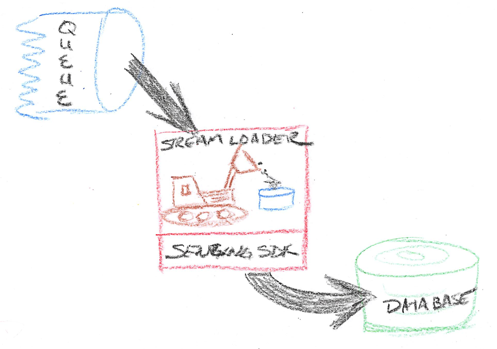

Load from existing queue
Version -
Given a queue containing records and a database initialized with the Senzing database schema, this deployment will read from the queue and insert into the Senzing database.

Choose deployment method